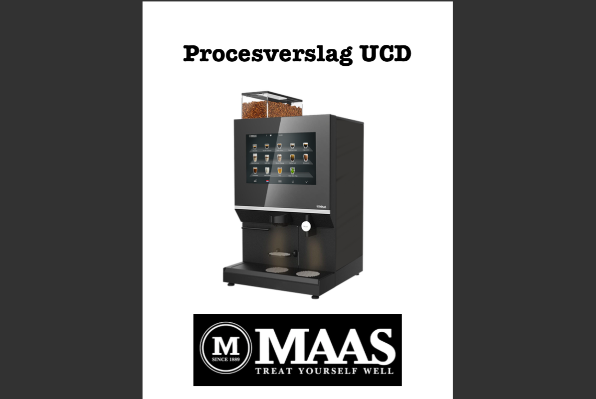

Begrijpen en kaderen
CMD'ers doen onderzoek om de context van het probleem, de wens van de gebruiker, doelstelling van de opdrachtgever, de belangen van stakeholders en de mogelijkheden van de technologie te begrijpen.
Voorbeelden
Ontwerphandleiding - NPD

Procesverslag - UCD
